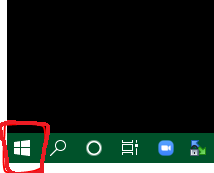
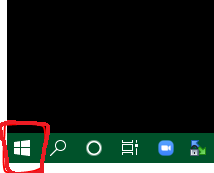

【まえがき】
サンプルアプリ制作キットを作ってみました！
一からプログラミングを始める方にとっては、最初はよくわからないことの方が多いと思います。
こちらの制作キットで、是非プログラミングを体験して頂き、
段々「こういうものなんだ！」と思ってもらえれば嬉しいです♪
少しでも面白い部分があると段々繋がってくるはずですので、
気分が乗った時に作ってみてください(^^)
【手順】
１、まず、パソコンの中から「メモ帳」（Macの場合は、「テキストエディット」みたいです）を開きます
メモ帳を開く手順
例１：
■画面左下のWindowsロゴをクリック

■メニュー上部の「すべてのアプリ」をクリック

■表示されたアプリ内から、「Windowsアクセサリ」をクリック

■メモ帳をクリック

■画面左下のWindowsロゴをクリック

■メニュー上部の「すべてのアプリ」をクリック
■表示されたアプリ内から、「Windowsアクセサリ」をクリック
■メモ帳をクリック
例２：
■キーボードの「Windowsロゴキー + R」を同時に押す

■表示された入力欄に「notepad」と入力し、Enterキーを押す
■キーボードの「Windowsロゴキー + R」を同時に押す
■表示された入力欄に「notepad」と入力し、Enterキーを押す
こちらのサイトも参考になります（https://office-hack.com/windows/windows10-notepad/）
２、次にテキストファイルとして保存します
テキストファイルとして保存する手順
■開いたメモ帳を選択した状態で、左上にある「ファイル」をクリック

■表示されたメニューから「名前を付けて保存」をクリック

■名前を付けて保存するためのエクスプローラーが開きますので、左上の「新しいフォルダー」をクリック

■作成された新しいフォルダーに「プログラミング勉強用フォルダ」など好きな名前を付け、
そのフォルダをダブルクリックし、フォルダ内に入る
■ファイル名欄に「study_1.html」を入力し、「保存」ボタンをクリック

■表示されたメニューから「名前を付けて保存」をクリック
■名前を付けて保存するためのエクスプローラーが開きますので、左上の「新しいフォルダー」をクリック
■作成された新しいフォルダーに「プログラミング勉強用フォルダ」など好きな名前を付け、
そのフォルダをダブルクリックし、フォルダ内に入る
■ファイル名欄に「study_1.html」を入力し、「保存」ボタンをクリック
参考サイト：https://office-hack.com/windows/windows10-notepad/
３、送付した「study_1.html」の記載内容を、作成した「study_1.html」に模写します
【重要】自分で記載内容を打ち込むことが大切なので、コピー＆ペーストは今回は無しでお願いしますm(_ _)m
模写する手順